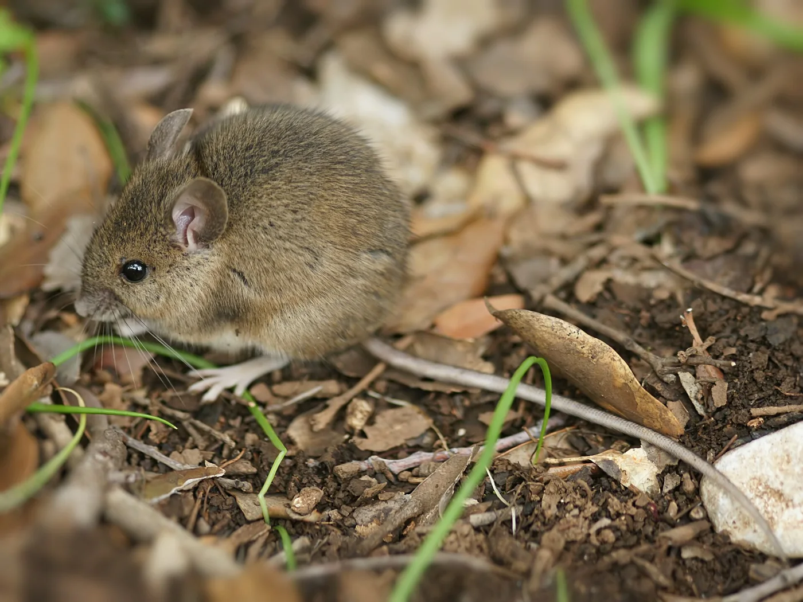
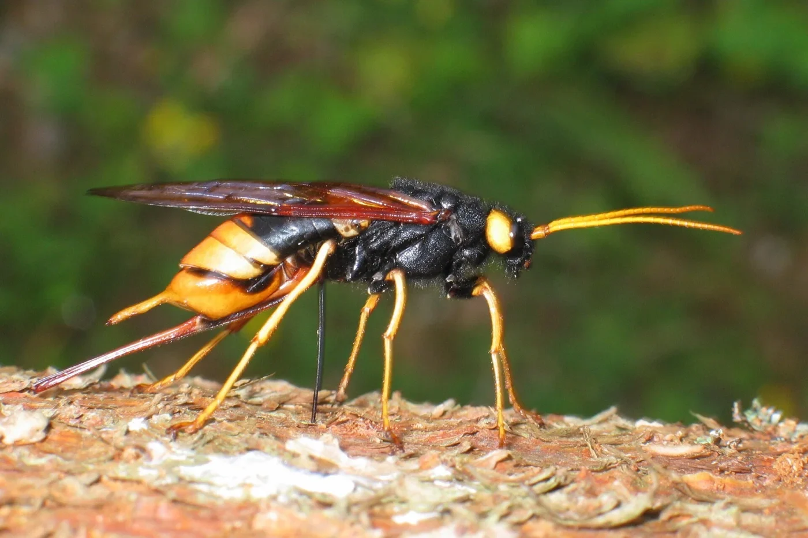
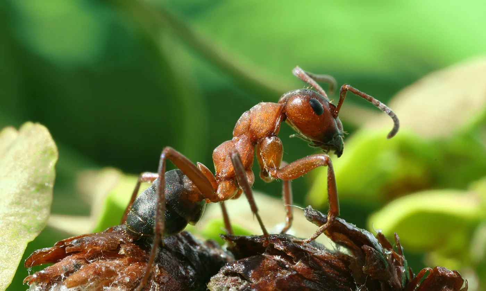

Kjenn igjen · leksikon Foto: Dion Art · CC BY-SA 4.0Foto: Hans Hillewaert · CC BY-SA 3.0
Foto: Dion Art · CC BY-SA 4.0Foto: Hans Hillewaert · CC BY-SA 3.0 Foto: Michael Palmer · CC BY-SA 4.0
Foto: Michael Palmer · CC BY-SA 4.0 Foto: Gilles San Martin · CC BY-SA 4.0
Foto: Gilles San Martin · CC BY-SA 4.0 Foto: Gilles San Martin · CC BY-SA 4.0
Foto: Gilles San Martin · CC BY-SA 4.0 Foto: Bj.schoenmakers · CC0
Foto: Bj.schoenmakers · CC0 Foto: Christian Fischer · CC BY-SA 3.0
Foto: Christian Fischer · CC BY-SA 3.0 Foto: Martin Cooper from Ipswich, UK · CC BY 2.0Foto: Holger Gröschl · CC BY-SA 2.0 de
Foto: Martin Cooper from Ipswich, UK · CC BY 2.0Foto: Holger Gröschl · CC BY-SA 2.0 de Foto: iNaturalist-bruker · CC0Foto: iNaturalist-bruker · CC0
Foto: iNaturalist-bruker · CC0Foto: iNaturalist-bruker · CC0 Foto: Joss Carr · CC BY 4.0
Foto: Joss Carr · CC BY 4.0 Foto: Rosario Douglas · CC BY 4.0
Foto: Rosario Douglas · CC BY 4.0 Foto: iNaturalist-bruker · CC0
Foto: iNaturalist-bruker · CC0 Foto: W.alter · CC BY-SA 4.0
Foto: W.alter · CC BY-SA 4.0
Kjenn igjen dyret
Kjennetegn og forvekslingsarter for 15 dyr du kan møte i og rundt huset. Basert på Folkehelseinstituttets skadedyrhåndbok. Vet du hva det er og lurer på hva du skal gjøre? Se Råd og løsninger.
HusmusMus musculusSkadedyr

SkogmusApodemus spp.Skadedyr
BrunrotteRattus norvegicusSkadedyr
VeggedyrCimex lectulariusSkadedyr
SvaletegeOeciacus hirundinisUfarlig
SkjeggkreCtenolepisma longicaudatumSkadedyr
SølvkreLepisma saccharinumUfarlig
StikkevepsVespula spp. m.fl.Skadedyr

KjempetrevepsUrocerus gigasUfarlig
StokkmaurCamponotus spp.Skadedyr

Rød skogsmaurFormica rufa-gruppenUfarlig
Svart jordmaurLasius nigerSkadedyr
Melsmalmott (melmøll)Ephestia kuehniellaSkadedyr
Tysk kakerlakkBlattella germanicaSkadedyr
SkogflåttIxodes ricinusSkadedyr